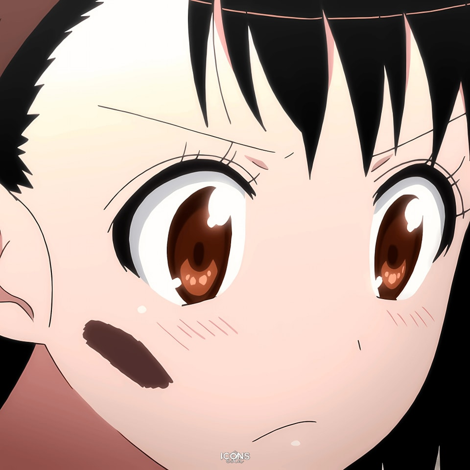
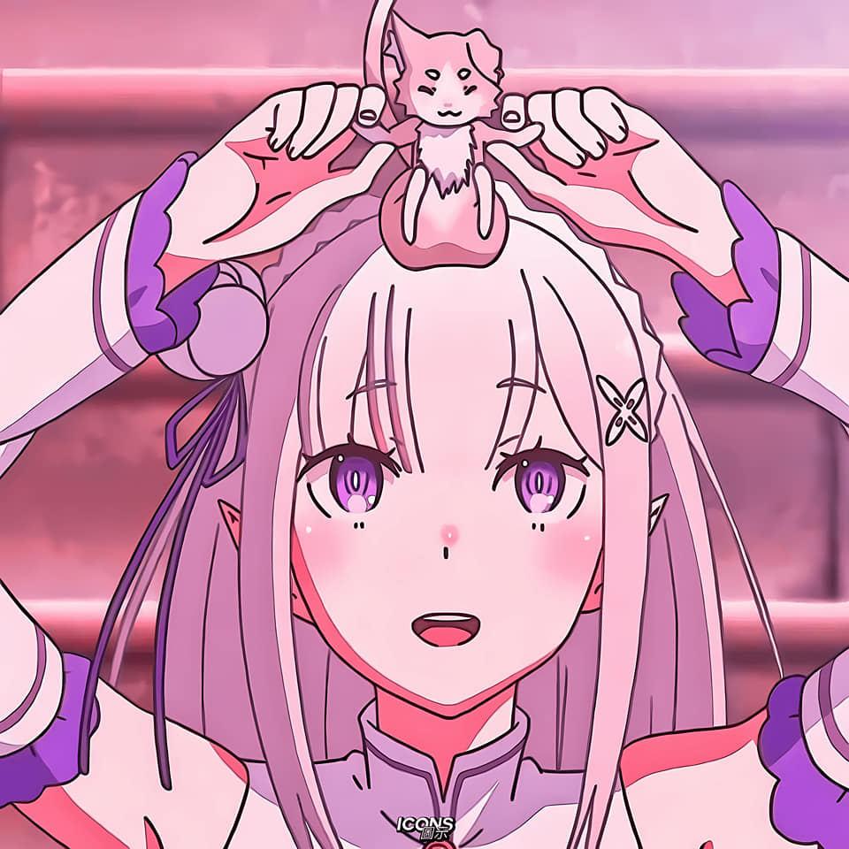
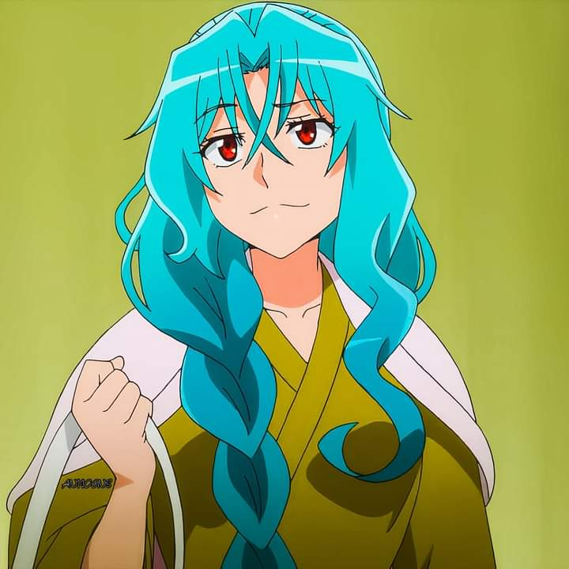
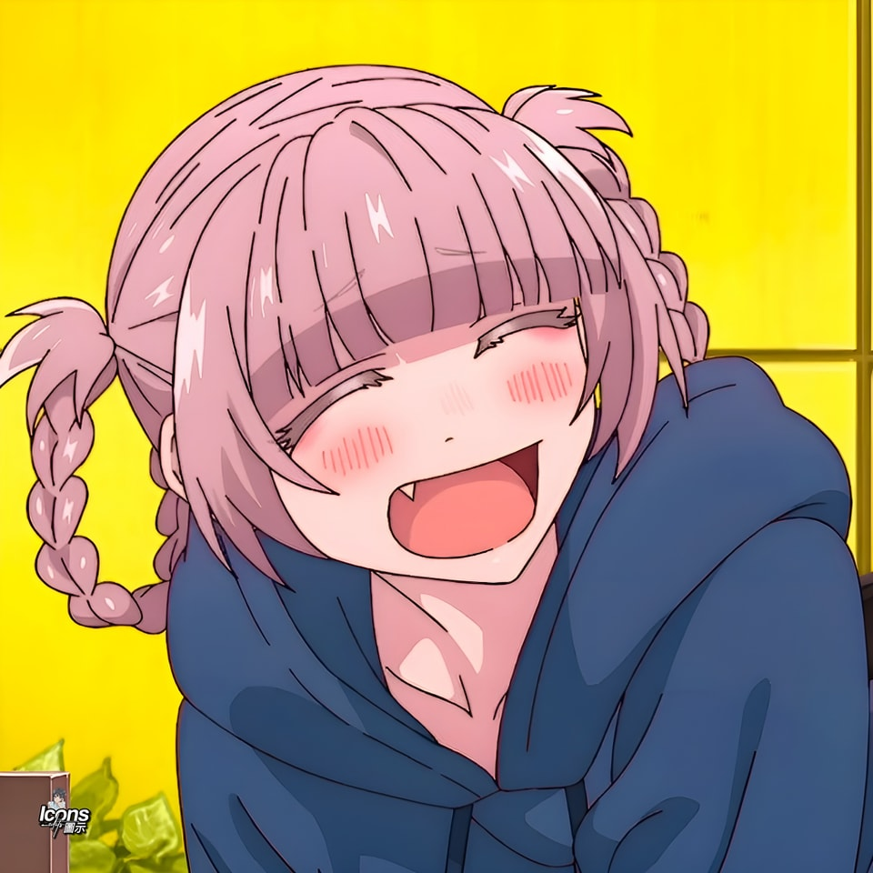

-
Dashboard Project
Github? Click on the eye!


-
The Promised Girl
Kosaki Onodera was Raku's childhood friend — and the girl who actually made the promise with him.
-
Secret Baker
Onodera is a terrible cook — except for sweets. Her macarons are legendary and basically a love confession in pastry form.
-
Shy but Brave
Despite being painfully shy, Onodera kept her feelings for Raku for years without giving up. Quiet dedication hits different.
-
The Key Girl
Onodera had a key that matched Raku's locket — the whole series she wondered if she was the one, and she was right all along.
-
Fan Favourite
Onodera consistently ranked #1 in Nisekoi popularity polls. The readers knew. Raku did not. That's the whole tragedy.

Kosaki Onodera Hi there,
Kosaki Onodera (@kawaii)
-
Confession Event — Limited Time
Raku still hasn't figured out who made the promise. Vote for your girl and help him make up his mind. Polls close Friday.
-
The Locket Mystery ~ Dev Blog
We broke down the full timeline of the locket and key storyline. Spoiler: Onodera was right there the whole time and he still missed it.
-
Onodera's Macaron Recipe Drop
We recreated Kosaki's legendary macarons from the manga. Step-by-step guide now live — perfect for embarrassing yourself in front of your crush.
@bakugoo
Loves bombs-

@emiliaa
Subaru > Ford -

@tomoee
big manga fan -

@nazunaa
Obsessed